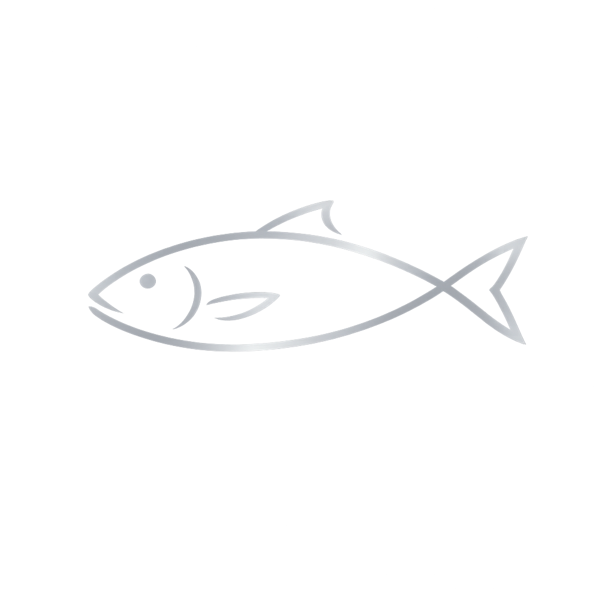

River
Read
PNW
Live Data
Oregon
Loading River Data…
Fetching real river geometry from OpenStreetMap
🎣 Click any river to see current conditions
⚠️ Could not load river data — check your connection and refresh
Conditions
Prime Fishing
Use Caution
Running High
Running Low
✕